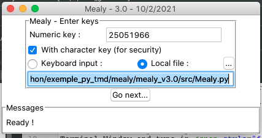
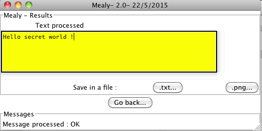

Mealy project - User's guide
Version 3.0 - 15/4/2021
Role
Mealy project is a small tool used to cipher and decipher a text file using
a Mealy machine.
Ciphered messages can be hidden in an image using steganography.
Prerequisites
- Python 3.6+ must be installed on your computer
To check, open a Terminal Window and type in python3
-V
Download the latest Python version on web site : https://www.python.org/downloads
- mealy_v3.0 project folder
Optional
To use steganographic
features, download and install following python module with pip3 tool :
Module Image Python Imaging Library (Pillow) :
https://python-pillow.org : maintained by : Alex Clark (PIL Fork
Author).
Command to install or upgrade : python3
-m pip
install --upgrade
Pillow
Module stepic version 0.5.0 : https://launchpad.net/stepic
: licence GNU GPL 2
maintained by Scott Kitterman and Lenny Domnitser.
Command to install or upgrade : python3
-m pip install --upgrade stepic
Using GUI mode
Launch the program
- On Windows, double-click on run_Mealy.py
- Launch run_Mealy.py in a terminal : go to src directory and
launch with command python3 run_Mealy.py
- On Mac, associate src/run_Mealy.py with Python Launcher :
In finder select src/run_Mealy.py, right single click, Open with :
Python Launcher App (3.9.1)
(If not proposed, Python Launcher is located in
/Applications/Python 3.9)
Ciphering a message
- Enter your secret keys and then click Go
Next ... button
Note : For more security enter a second key from keyboard or file.

- Tell the program your secret message and then click Go
Next ... :

- The ciphered text is displayed :

- Save the ciphered message in a text file by clicking .txt...
button
or hide by steganography ciphered text in a .png image by clicking .png...
button.
- The following image renard.png contains the ciphered message.
- Transmit the ciphered file or image by e-mail and the keys by an other
way phone, SMS, USB key...
Decyphering a Message
- Enter the secret keys you received and then click Go
Next ... button
- In the cyphering window : Click on the Decipher
radio button
- Insert in the orange text editor the content of the ciphered file you
received by clicking Insert from a
file... button
- Click Go Next ... button to
decipher text :
- The deciphered message appears :

Breaking the system
This estimation is done according the algorithm described in Programmer's
guide.
Breaking the machine consist in discovering secret keys.
Knowing a message and its ciphered version :
- If only one numeric key is used in the range [0; 9223372036854775807]
to cypher the message and if the message is long enough, the maximum of
attempt is around 5*1018 at the condition user give a long
enough numeric key !
- If a second key of length 50 characters is used to modify alphabet
order, the last number of attempt should be multiply by the maximum
number of cyclic
possible permutation of the alphabet (100 characters) : 100! /
((100-50)!*50).
Other guides
References
Author - licence
Author : Thierry Maillard (TMD)

Licence : GPLv3
Copyright (c) 2021- Thierry Maillard
This file is part of Mealy project.
Mealy project is free software: you can redistribute it
and/or modify
it under the terms of the GNU General Public License as
published by
the Free Software Foundation, either version 3 of the
License, or
(at your option) any later version.
Foobar is distributed in the hope that it will be useful,
but WITHOUT ANY WARRANTY; without even the implied
warranty of
MERCHANTABILITY or FITNESS FOR A PARTICULAR
PURPOSE. See the
GNU General Public License for more details.
You should have received a copy of the GNU General Public
License
along with Mealy project. If not, see <http://www.gnu.org/licenses/>.